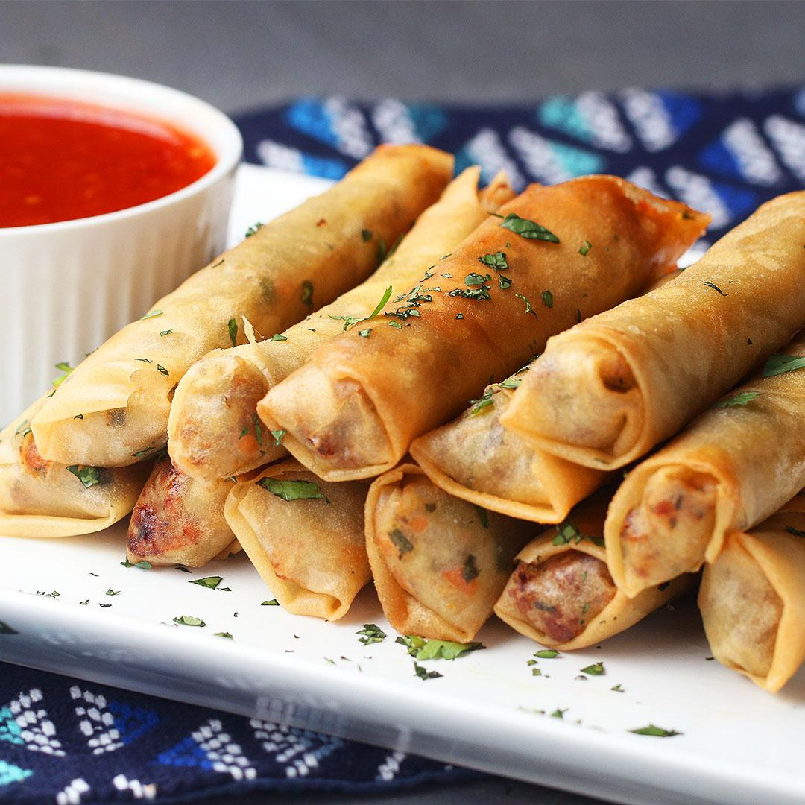

Lumpia is one of the favorite snacks and appetizer by Filipinos. Though it had similarity on other country such as Indonesian Lumpia Shanghai. Instead Philippines has its own distinct flavor that separates them from other asian counterparts. That is meaty and salty.
Note: you can have other alternatives for the ingredients, but having the same ingredient shown above will show the same traditional Filipino taste of Lumpia.
Place a wok or large skillet over high heat, and pour in 1 tablespoon vegetable oil. Cook pork, stirring frequently, until no pink is showing. Remove pork from pan and set aside. Drain grease from pan, leaving a thin coating. Cook garlic and onion in the same pan for 2 minutes. Stir in the cooked pork, carrots, green onions, and cabbage. Season with pepper, salt, garlic powder, and soy sauce. Remove from heat, and set aside until cool enough to handle.
Place three heaping tablespoons of the filling diagonally near one corner of each wrapper, leaving a 1 1/2 inch space at both ends. Fold the side along the length of the filling over the filling, tuck in both ends, and roll neatly. Keep the roll tight as you assemble. Moisten the other side of the wrapper with water to seal the edge. Cover the rolls with plastic wrap to retain moisture.
Heat a heavy skillet over medium heat, add oil to 1/2 inch depth, and heat for 5 minutes. Slide 3 or 4 lumpia into the oil. Fry the rolls for 1 to 2 minutes, until all sides are golden brown. Drain on paper towels. Serve immediately.